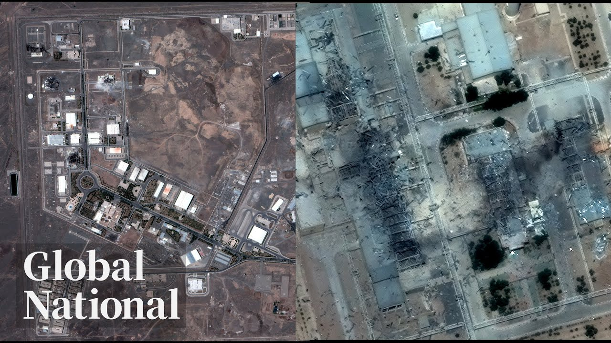

【优质全球新闻节目：Global News｜卫星图像显示伊朗福尔多核设施受损｜加拿大时间 2025-06-22】
Summary: The US launched strikes on Iranian nuclear facilities, escalating tensions and prompting threats of retaliation from Iran, while experts assess the damage and global leaders call for de-escalation.
摘要： 美国对伊朗核设施发动袭击，局势升级引发伊朗报复威胁，专家评估损失，全球领导人呼吁降温。

⏱️ Estimated Reading Time: 32 min
📚 六级生词 📚 雅思生词 📚 托福生词 📚 专八生词 📚 SAT生词 📚 考研生词 📚 GRE生词 📚 高考生词
[Music] On this Sunday night, the US hits Iran.
[音乐] 在这个周日夜晚，美国袭击了伊朗。
The American strike on Iranian nuclear facilities puts the world on edge with Thrron now warning of everlasting consequences.
美国对伊朗核设施的打击令世界紧张，德黑兰警告将带来永久性后果。
What happens next and the consequences for the regime and the region, plus reason for hope.
接下来会发生什么以及对政权和地区的影响，还有希望的理由。
People of Iran, they've been fighting for 45 years to get their freedom.
伊朗人民为争取自由已奋斗了45年。
Why some Canadian Iranians believe the regime's days are finally numbered.
为何一些加拿大伊朗人认为该政权的日子终于屈指可数。
And dangerous heat.
以及危险的高温。
The scorching temperatures cooking up concerns in central Canada.
炙热气温在加拿大中部引发担忧。
Global National reporting tonight.
今晚全球国家报道。
Jeff Simple.
杰夫·辛普尔。
Good evening and thank you for joining us.
晚上好，感谢您的收看。
The world is bracing for Iran's response.
世界正为伊朗的回应做准备。
One day after the US launched a series of bombings targeting three of Iran's nuclear sites.
美国对伊朗三处核设施发动一系列轰炸一天后。
Take a look at these before and after satellite images revealing the damage to the entrance of the critical Ford nuclear site.
看看这些前后对比的卫星图像，揭示了关键福尔多核设施入口的损坏情况。
That shows the surface of course, but that facility is buried within the mountain, out of range for the Israeli military.
这当然显示了表面情况，但该设施深埋山中，超出以色列军队的打击范围。
So the Pentagon deployed these specialized warplanes armed with bunker buster bombs capable of hitting targets deep underground.
因此五角大楼派出这些配备掩体炸弹的特种战机，能够打击地下深处的目标。
President Trump says the strikes completely obliterated the regime's enrichment facilities.
特朗普总统表示袭击彻底摧毁了该政权的浓缩设施。
Iran denies that and neither side has provided evidence.
伊朗否认这一点，双方均未提供证据。
Experts say it could take weeks to determine the extent of the damage.
专家表示可能需要数周时间才能确定损坏程度。
Within hours, Iran hit back, firing a barrage of missiles on Israel.
几小时内，伊朗反击，向以色列发射一连串导弹。
Thrron has so far not attacked any US targets, but the regime says the American strikes crossed a red line and it declared all American assets and soldiers in the region to be quote legitimate targets.
德黑兰迄今未袭击任何美国目标，但该政权表示美国的打击越过了红线，并宣布该地区所有美国资产和士兵为"合法目标"。
Tonight, President Trump, who has said he is not seeking regime change, posted this statement asking if the current Iranian regime is unable to make Iran great again, why wouldn't there be a regime change?
今晚，特朗普总统表示他并不寻求政权更迭，但发布声明质问如果当前伊朗政权无法让伊朗再次伟大，为何不能有政权更迭？
This marks the first time the US has ever directly attacked the Islamic Republic and it's fueling fears the US could be drawn into a wider war.
这是美国首次直接攻击伊斯兰共和国，加剧了美国可能卷入更广泛战争的担忧。
Candace Cole begins our coverage tonight from Washington.
坎迪斯·科尔今晚从华盛顿开始我们的报道。
There will be either peace or there will be tragedy for Iran.
对伊朗来说，要么和平，要么悲剧。
Just days after President Trump said he would give Iran up to two weeks to negotiate over its nuclear program before deciding whether to involve the US in Israel's conflict with Iran.
就在特朗普总统表示将给伊朗两周时间就其核计划进行谈判，再决定是否让美国介入以色列与伊朗冲突几天后。
The US carried out Operation Midnight Hammer, a surprise attack on Iranian nuclear facilities without congressional approval last night.
美国昨晚未经国会批准实施了"午夜铁锤"行动，对伊朗核设施发动突袭。
On President Trump's orders, US Central Command conducted a precision strike in the middle of the night against three nuclear facilities in Iran.
根据特朗普总统的命令，美国中央司令部在午夜对伊朗三处核设施实施精确打击。
For Natans, and Esvahan in order to destroy or severely degrade Iran's nuclear program.
目标是纳坦兹和伊斯法罕，以摧毁或严重削弱伊朗的核计划。
According to Joint Chiefs of Staff Chairman General Dan Kaine, fighter pilots flew 18 hours to drop 14 bunker buster bombs on nuclear targets.
据参谋长联席会议主席丹·凯恩将军称，战斗机飞行员飞行18小时投下14枚掩体炸弹打击核目标。
This was a complex and high-risk mission carried out with exceptional skill and discipline by our joint force.
这是一项复杂且高风险的任务，我们的联合部队以卓越的技巧和纪律执行。
We are currently unaware of any shots fired at the US strike package on the way in.
我们目前不知道美国打击编队进入时遭到任何射击。
The US strikes come more than a week after Israel launched air strikes on Iranian nuclear facilities, marking a significant escalation in a war many fear will bring even more volatility to the region.
美国发动袭击一周多前，以色列对伊朗核设施发动空袭，标志着战争重大升级，许多人担心这将给该地区带来更多动荡。
As damage assessments are underway, the UN's nuclear watchdog says there are no signs of radioactive contamination.
在损害评估进行之际，联合国核监督机构表示没有放射性污染迹象。
In response, Thrron has vowed to defend itself at all costs.
作为回应，德黑兰誓言不惜一切代价自卫。
The wararmongering and lawless administration in Washington is solely and fully responsible for the dangerous consequences and farreaching implement implications of its act of aggression.
华盛顿的好战和无法无天的政府对其侵略行为的危险后果和深远影响负全部责任。
Following the strikes, President Trump warned Iran against retaliation in hopes of restoring peace.
袭击后，特朗普总统警告伊朗不要报复，希望恢复和平。
How that happens remains in question.
如何实现这一点仍是问题。
When Trump kind of tells the Iranians to return to the table, he's doing so with the expectation that that um Ayatollah Ali Hami is basically going to just wave the white flag.
当特朗普告诉伊朗人回到谈判桌时，他期望阿亚图拉阿里·哈米基本上会直接举起白旗。
Iran's foreign minister says he will meet with Russian President Vladimir Putin on Monday to discuss how to move forward.
伊朗外长表示将于周一与俄罗斯总统普京会面，讨论如何推进。
Meanwhile, the Department of Homeland Security is warning of possible cyber attacks and lone wolf attacks in the US following the strikes on Iran.
与此同时，国土安全部警告称，在袭击伊朗后，美国可能遭遇网络攻击和独狼式袭击。
Jeff, Candace Cole in Washington.
杰夫，华盛顿的坎迪斯·科尔报道。
Thanks, Candace.
谢谢，坎迪斯。
Israeli officials say Prime Minister Benjamin Netanyahu knew of those planned US strikes 24 hours beforehand.
以色列官员表示，总理内塔尼亚胡提前24小时知晓了美国计划中的袭击。
And Netanyahu was quick to praise President Trump for what he called a bold decision that will change history.
内塔尼亚胡迅速称赞特朗普总统做出了他称之为将改变历史的大胆决定。
President Trump acted to deny the world's most dangerous regime the world's most dangerous weapons.
特朗普总统行动阻止世界上最危险的政权获得最危险的武器。
God bless America.
上帝保佑美国。
God bless Israel.
上帝保佑以色列。
And may God bless our unshakable alliance, our unbreakable faith.
愿上帝保佑我们坚不可摧的联盟和我们牢不可破的信念。
The entire region is now on edge, awaiting Iran's next moves.
整个地区现在都紧张不安，等待伊朗的下一步行动。
Our Mike Armstrong is in the Middle East and joins me tonight from Jerusalem.
我们的迈克·阿姆斯特朗在中东，今晚从耶路撒冷加入我们。
Mike.
迈克。
Well, Jeeoff, the news the US had hit Iran came during the night here in Israel, so most people were asleep.
杰夫，美国袭击伊朗的消息是在以色列夜间传来的，所以大多数人都在睡觉。
The first response from Iran, on the other hand, came as people were waking up.
而伊朗的首次回应则在人们醒来时到来。
According to Israeli officials, there were two waves of missiles.
据以色列官员称，有两波导弹袭击。
The first just after 7 a.m., the second minutes later.
第一波在早上7点刚过，第二波几分钟后。
Air defenses intercepted and destroyed most of the estimated 35 projectiles.
防空系统拦截并摧毁了估计35枚导弹中的大部分。
Three made it through.
三枚突破防御。
There were impacts in Hifa, Tel Aviv, and just south of Tel Aviv.
导弹击中了海法、特拉维夫和特拉维夫以南地区。
The Israeli Health Ministry reports 86 people were taken to hospital.
以色列卫生部报告有86人送医。
No one was seriously injured.
无人受重伤。
Now, the government is asking journalists not to identify specific locations, but at this site, there was heavy damage to homes inside a radius of about 300 m from where the missile struck.
现在政府要求记者不要透露具体地点，但在这一地点，导弹击中处半径约300米内的房屋严重受损。
Dozens of homes will have to be torn down.
数十栋房屋将不得不拆除。
Everywhere we've been over the last few days, anywhere a missile has landed, we've been surprised that more people weren't injured or killed.
过去几天我们到过的每个导弹落点，都惊讶于没有更多人受伤或死亡。
And that applies to this home.
这栋房屋也是如此。
There were three people in a safe room in the basement when the missile struck here this morning.
今早导弹击中这里时，地下室安全屋里有三人。
There was a big bomb, but I didn't we didn't feel a shaking.
爆炸很大，但我们没感到震动。
These rooms are very impressive.
这些房间非常坚固。
Yeah, it's it's very solid.
是的，非常坚固。
The Israeli government is retightening rules across the country.
以色列政府正在全国范围内重新收紧规定。
Public gatherings are banned and only essential businesses are allowed to open, but a new banner in Tel Aviv does represent much of the public sentiment here.
禁止公共集会，只允许必要商业开放，但特拉维夫的新横幅确实代表了这里的大部分公众情绪。
Many welcome US involvement.
许多人欢迎美国的介入。
Trump is keeping his promise to keep Israel safe.
特朗普正在履行保护以色列安全的承诺。
Go for it, Trump.
加油，特朗普。
Thanks for helping us.
感谢帮助我们。
Thanks for being next to us.
感谢站在我们这边。
Now, there are banners on the streets of the Iranian capital as well.
现在，伊朗首都街头也有横幅。
The US attack is being called a grave violation of international law, one the government has to stand up to.
美国的袭击被称为严重违反国际法，政府必须予以抵制。
This man says the US made a futile move and has endangered its interests in the region.
这名男子表示美国做了徒劳之举，危及了其在该地区的利益。
While the Iranian president joined a rally in the streets of Thran Sunday, there were chance of death to the USA, but so far there's been no retaliation against US troops in the region.
虽然伊朗总统周日参加了德黑兰街头的集会，有"美国去死"的口号，但迄今尚未对该地区的美国部队进行报复。
That's been the biggest threat in recent days from the Iranian government and something everyone is watching, Jeff.
这是伊朗政府近几日最大的威胁，也是所有人都在关注的事情，杰夫。
All right, Mike Armstrong in Jerusalem.
好的，耶路撒冷的迈克·阿姆斯特朗报道。
Thanks, Mike.
谢谢，迈克。
The Iranian regime has promised to retaliate against those US strikes and is reportedly considering a wide range of possible targets.
伊朗政权已承诺报复美国的袭击，据报道正在考虑广泛的可能目标。
Those include US military bases and closing the Strait of Hormuz.
其中包括美国军事基地和关闭霍尔木兹海峡。
That's a critical choke point for oil supplies that could send global gas prices soaring.
这是石油供应的关键咽喉要道，可能导致全球汽油价格飙升。
Nathaniel Dove reports now on the Iranian response.
纳撒尼尔·多夫现在报道伊朗的回应。
Beyond the Middle East, a chorus of support for the US strike on Iran's nuclear sites.
在中东以外，对美国打击伊朗核设施的支持声一片。
God bless America and concern for what happens next.
上帝保佑美国，以及对接下来发生什么的担忧。
The US has now taken action to alleviate that threat.
美国现已采取行动减轻这一威胁。
Uh it is important uh that we now deescalate the situation.
呃，现在我们重要的是要缓和局势。
The question looming over the region now is how will Iran respond?
现在笼罩该地区的问题是伊朗将如何回应？
Experts say the regime's reaction depends on what it believes the US will do.
专家表示该政权的反应取决于其认为美国会做什么。
JD Vance and President Trump are staying and tweeting regime change isn't on the agenda.
JD·万斯和特朗普总统坚持并推文表示政权更迭不在议程上。
But I don't think the Iranians are convinced.
但我不认为伊朗人相信这一点。
Iran had promised to attack the US if the Americans interveneed.
伊朗曾承诺如果美国人干预就会攻击美国。
The US has military bases in more than half a dozen countries in the region like Qatar and Kuwait with tens of thousands of American troops.
美国在该地区六个多国家如卡塔尔和科威特设有军事基地，驻有数万美军。
On Sunday, Iran's parliament voted to close the Straight of Hormuz, a vital shipping lane for more than 20% of the world's oil.
周日，伊朗议会投票决定关闭霍尔木兹海峡，这是全球20%以上石油的重要运输通道。
If that happens, it will likely drive up global prices.
如果发生这种情况，可能会推高全球价格。
That would perhaps uh get China to get more involved to try and broker some sort of peace.
这或许呃会让中国更多地参与进来，试图斡旋某种和平。
A former Canadian diplomat to Iran points out the country still has missiles and a proxy, the Houthis in Yemen, who can help make shipping in the strait painful.
一位前加拿大驻伊朗外交官指出，该国仍有导弹和代理人也门胡塞武装，他们可以让海峡航运变得痛苦。
But Donald Trump warned the US could keep attacking Iran if it strikes back.
但特朗普警告称，如果伊朗反击，美国可以继续攻击伊朗。
Focusing on Israel seems to be what they're maybe hoping to do because they're banking that Trump doesn't want to get into this war.
他们可能希望专注于以色列，因为他们押注特朗普不想卷入这场战争。
Iran's long-term strategy is another issue.
伊朗的长期战略是另一个问题。
The regime has already vowed to rebuild its nuclear sites and Horax suggests is likely considering how to use them.
该政权已誓言重建其核设施，霍拉克斯认为其可能正在考虑如何使用它们。
There can be an argument that's I'm sure being made that none of this would be happening if we actually had a nuclear weapon.
可以提出一个论点，我确信正在提出，即如果我们真的拥有核武器，这一切都不会发生。
Dennis Horax says what the regime does next likely depends on how damaged their nuclear sites are.
丹尼斯·霍拉克斯表示该政权的下一步行动可能取决于其核设施的受损程度。
They are pragmatic.
他们是务实的。
They are rational, but they're also prone to miscalculation.
他们是理性的，但也容易误判。
Horax says the regime is likely weighing what it can do, but knows doing nothing could invite more attacks.
霍拉克斯表示该政权可能在权衡它能做什么，但也知道什么都不做可能招致更多攻击。
Nathaniel Dove, Global News, Toronto.
多伦多全球新闻的纳撒尼尔·多夫报道。
Canadian Prime Minister Mark Carney reacted to the US strikes, saying Canada has been consistently clear Iran can never be allowed to develop a nuclear weapon.
加拿大总理马克·卡尼对美国袭击作出反应，表示加拿大一贯明确伊朗绝不能发展核武器。
But the PM also pushed for restraint, saying the resolution of the Iranian crisis should lead to a broader deescalation of hostilities in the Middle East, including a ceasefire in Gaza.
但总理也敦促克制，表示伊朗危机的解决应导致中东敌对行动的广泛缓和，包括加沙停火。
Global News spoke exclusively to Israel's deputy foreign minister, who denounced Prime Minister Carney's calls for deescalation.
全球新闻独家采访了以色列副外长，他谴责卡尼总理的缓和呼吁。
I think that the calling for deescalation, for diplomatic solution.
我认为呼吁缓和、外交解决。
They've tried that.
他们已经尝试过了。
Matter of fact, they've tried that for more than 15 years now, and Iran just deceived them and was on the verge of breaking into a nuclear weapon.
事实上，他们已经尝试了15年多，而伊朗只是欺骗他们，并濒临突破核武器门槛。
As the conflict in the Middle East intensifies, Prime Minister Carney embarked on an overseas trip aimed at bolstering Canada's own defense capabilities and improving relations with our European allies.
随着中东冲突加剧，卡尼总理开始海外访问，旨在增强加拿大自身防御能力并改善与欧洲盟友的关系。
Our Mackenzie Gray is traveling with the prime minister and he joins me now from Brussels.
我们的麦肯齐·格雷与总理同行，他现在从布鲁塞尔加入我们。
McKenzie, the prime minister's arrived here in Brussels, Jeff, but it's the attack on Iran that's dominating the conversation.
麦肯齐，总理已抵达布鲁塞尔，杰夫，但伊朗遇袭事件成为讨论焦点。
Mr. Carney, do you agree with the Americans decision to bomb Iran, sir?
卡尼先生，您是否同意美国轰炸伊朗的决定？
Mark Carney didn't stop and answer reporters questions before heading to Belgium.
马克·卡尼在前往比利时前未停留回答记者提问。
Instead, issuing a statement shortly after takeoff and leaving further comment to the foreign affairs minister.
他在起飞后不久发表声明，并将进一步评论留给外交部长。
Iran has been developing its nuclear capacity and it is a source of grave instability in the region.
伊朗一直在发展核能力，这是该地区严重不稳定的根源。
The actions of the United States were an attempt to alleviate that threat.
美国的行动旨在缓解这一威胁。
Anita Anand also saying that she spoke with the Iranian foreign affairs minister before the attack on Saturday.
安妮塔·阿南德表示，她在周六遇袭前与伊朗外交部长进行了交谈。
I emphasized the importance of the safety and security of Canadian citizens in the region.
我强调了该地区加拿大公民安全的重要性。
I also emphasize the importance of deescalation.
我还强调了缓和局势的重要性。
Anan's office didn't specify who else the minister spoke with on Sunday, including if she spoke with US Secretary of State Marco Rubio, with her team only saying they're in constant communication.
阿南德的办公室未具体说明部长周日还与谁交谈，包括是否与美国国务卿马可·卢比奥通话，仅表示团队保持持续沟通。
The attack on Iran is overshadowing this trip to Europe where Carney set to sign an agreement with the European Union to allow Canadian defense companies to participate in European projects.
伊朗遇袭事件给卡尼的欧洲之行蒙上阴影，他原计划与欧盟签署协议，允许加拿大防务公司参与欧洲项目。
And then there's the NATO summit in the Netherlands.
随后还有在荷兰举行的北约峰会。
The US wants countries to spend 5% of GDP on defense, up from 2%.
美国希望各国将国防开支从GDP的2%提高到5%。
A target Canada will only hit this year.
加拿大今年才刚达到这一目标。
Canadian officials say they're still negotiating if they'll sign on to the 5% pledge, Jeff, but if they do, it will cost tens of billions of dollars more annually.
加拿大官员表示仍在协商是否签署5%的承诺，杰夫，但如果签署，每年将多花费数百亿加元。
Mackenzie Gray in Brussels.
麦肯齐·格雷在布鲁塞尔报道。
Thanks, Mac.
谢谢，麦克。
Dangerously hot.
危险高温。
Coming up, an early summer heat wave scorches central Canada.
接下来，初夏热浪席卷加拿大中部。
We'll tell you how long it could last.
我们将告知高温持续时长。
Extreme heat warnings are now in place for southern and eastern Ontario as well as western Quebec.
安大略省南部和东部以及魁北克省西部已发布极端高温警告。
Temperatures there are expected to peak in the mid30s in both provinces with humidity making some parts feel well above 40°.
两地气温预计达35℃左右，湿度使部分地区体感温度远超40℃。
Lexi Benedict reports on how people are coping and when to expect relief.
莱克西·本尼迪克特报道民众应对措施及降温预期。
Summer in Toronto is off to a sizzling start.
多伦多的夏季火热开场。
It's like a jungle out there.
外面像丛林一样。
I mean, the heat, the humidity.
我是说，高温和湿度。
Environment Canada says temperatures are expected to surpass the 30s with humidex values hitting the 40s.
加拿大环境部预计气温将超30℃，体感温度达40℃以上。
We saw at noon uh Toronto had the warmest temperature in Canada.
中午时分，多伦多成为加拿大最热城市。
It was up to uh you know 32°.
气温高达32℃。
And while many may flock to the beaches and great outdoors to soak in all the sun, it's so hot outside today.
尽管许多人涌向海滩和户外享受阳光，但今天外面太热了。
So we came out to Sugar Beach.
所以我们来到糖沙滩。
I'm here visiting from Vancouver for the weekend.
我从温哥华来此度周末。
Were you expecting it to be this hot?
你预料到会这么热吗？
No, it's so crazy.
没有，太疯狂了。
Oh my gosh, it's so hot and humid.
天哪，又热又潮湿。
Officials are warning that these conditions are dangerously hot.
官员警告这种高温很危险。
You go out in that sun and you can add another 6, 7, 8° to the stress on the body.
在阳光下，体感温度会再增加6-8℃。
And that's why it's a real health risk for everybody.
因此这对所有人都是健康威胁。
Toronto residents trying to make it through the first heat wave of the year.
多伦多居民正努力熬过今年首波热浪。
It's too hot.
太热了。
Uh I did not expect this hot, but it was too hot.
我没料到这么热，但确实太热了。
It's just it's almost too hot to hang out outside and and play any sports.
热得几乎无法户外活动或运动。
It's ridiculous.
太离谱了。
Too hot to handle for some, but not all.
对有些人难以忍受，但并非所有人。
Me actually everybody afraid.
其实大家都害怕。
It's cold.
很冷。
It's not as you see, I know get any tent probably.
不像你看到的，我知道可能搭帐篷。
A long time uh we didn't get this uh this vibe and this summer vibe.
很久没感受这种夏日氛围了。
So, we're very happy to be here.
所以我们很开心来这里。
Temperatures only expected to rise.
气温预计继续攀升。
Officials say Monday could be record-breaking.
官员称周一可能破纪录。
And if it goes to 36, well, that would be the the warmest in 10 years.
若达36℃，将是十年来最热。
So, uh it really is uh significant.
所以这确实很显著。
And relief from this extreme heat isn't expected anytime soon with these temperatures expected to last over the next few days.
短期内高温不会缓解，预计将持续数日。
So, residents, especially here in the city, are being encouraged to stay cool and hydrated as much as possible.
因此鼓励居民，尤其是城市居民，尽可能保持凉爽和补水。
Lexi Benedict, Global News Toronto.
莱克西·本尼迪克特，多伦多环球新闻。
Signing up to serve.
报名服役。
Still ahead, the military is reporting a spike in recruitment, but still struggling with retention.
接下来，军方报告招募激增，但仍面临留任难题。
Prime Minister Mark Carney is vowing to rebuild Canada's military.
总理马克·卡尼誓言重建加拿大军队。
But that won't be possible without adding personnel.
但若不增加人员，这将无法实现。
Canada's armed forces are facing a significant shortage.
加拿大武装部队面临严重短缺。
They need about 13,000 more members.
还需约1.3万名成员。
The military has made record progress, attracting new recruits this year.
军方今年招募新兵创纪录。
But as Dia Isri reports, it's also struggling with retention.
但据迪亚·伊斯里报道，留任仍是难题。
At a time of renewed focus on Canadian sovereignty, there's renewed interest in the Canadian armed forces.
在重新关注加拿大主权之际，人们对加拿大军队重燃兴趣。
We're hitting record highs of Canadian wanting to join the military.
想参军的加拿大人数量创纪录。
Go up the hill right to the crest.
直接登上山顶。
Numbers obtained by Global News show recruitment hit its highest level in a decade.
环球新闻获得的数据显示招募达十年来最高水平。
More than 6,700 people enrolled in the regular forces between April 2024 and March 2025, surpassing the military's goal of nearly 6,500.
2024年4月至2025年3月间逾6700人加入常备军，超出军方近6500人的目标。
The military says it's too early to tie the jump to US President Donald Trump's 51st state rhetoric or trade war.
军方表示尚无法确定激增是否与特朗普"第51州"言论或贸易战有关。
The armed forces have widened eligibility and launched a new application portal.
军方放宽资格并推出新申请门户。
Many of the measures that we put in place uh were were looking like they were bearing fruit, understanding there's not one silver bullet.
我们实施的许多措施似乎见效，但明白没有万能方案。
But as more people walk through the door, current members keep walking out.
但随着更多人加入，现有成员持续流失。
The reason why retention has not been improving is because the military has been putting all of his um eggs in the recruitment basket.
留任未改善的原因是军方将所有精力投入招募。
The retention crisis actually worsened.
留任危机实际上恶化。
More than 5,000 people left the regular forces this fiscal year, compared to 4,256 the previous year.
本财年逾5000人离开常备军，去年为4256人。
The Department of Defense says the fluctuation is normal and on par with the country's allies.
国防部称波动正常，与盟国一致。
Last winter, Canada's top soldier put it bluntly.
去年冬天，加拿大最高将领直言。
There's no point recruiting if you're not retaining.
若不留住人，招募毫无意义。
Long-standing grievances include gaps in training, a lack of affordable housing, and compensation.
长期不满包括训练不足、缺乏经济适用房和薪酬问题。
Now is the time to act with urgency.
现在是紧急行动的时候。
It's not clear when military members will get that raise.
尚不清楚军人何时加薪。
Defense analysts say if Carney wants to make good on his pledge to rebuild the military and reach 2030 personnel targets.
防务分析家表示，若卡尼想兑现重建军队并达成2030年人员目标的承诺。
He can't afford to lose any more members already there.
他承受不起现有成员进一步流失。
Jeff Tia Isra in Montreal.
杰夫·蒂亚·伊斯拉在蒙特利尔报道。
Thanks Tia.
谢谢蒂亚。
Former Canadian cabinet minister John McCllum has died.
前加拿大内阁部长约翰·麦卡勒姆去世。
Macllum was first elected 25 years ago in the Toronto area writing of Markham.
麦卡勒姆25年前首次在多伦多地区万锦市当选。
He went on to serve as a cabinet minister for three different liberal prime ministers.
他随后为三位不同自由党总理担任内阁部长。
His portfolios included national defense, veterans affairs, as well as immigration, refugees, and citizenship.
其职务包括国防、退伍军人事务及移民、难民和公民身份。
Before entering politics, Macllum was dean of arts at McGill University at a time when his future boss Justin Trudeau was a student there.
从政前，麦卡勒姆任麦吉尔大学文学院院长，其未来上司贾斯汀·特鲁多当时在校就读。
Trudeau said today that Macllum helped him and the country navigate some of its most challenging times.
特鲁多今日表示，麦卡勒姆帮助他和国家度过最具挑战性的时期。
He passed away peacefully on Saturday surrounded by family.
他周六在家人陪伴下安详离世。
Macllum was 75.
麦卡勒姆享年75岁。
So we lived there for mixed emotions.
因此我们怀着复杂情绪生活。
Up next, Iranian Canadians react to the US strikes on their homeland.
接下来，伊朗裔加拿大人对美袭击其祖国的反应。
Why some believe it could spell the end of the authoritarian regime.
为何有人认为这可能预示专制政权终结。
Welcome back.
欢迎回来。
The US and Israeli attacks on Iran have left members of the Iranian diaspora here in Canada with mixed emotions.
美国和以色列对伊朗的袭击令加拿大伊朗侨民心情复杂。
Worried for their loved ones still in Iran, but also hoping these strikes on its nuclear facilities might finally spell an end to the authoritarian regime that's ruled the country for decades.
既担忧仍在伊朗的亲人，又希望对其核设施的打击能终结统治该国数十年的专制政权。
Heidi Patraic has their story.
海蒂·帕特里克带来他们的故事。
Islamic Republic does not show mercy to its own people.
伊斯兰共和国对本国人民毫不留情。
As far as Zeba Meshkuri is concerned, the American strikes in Iran weren't aimed at her native country, but at the authoritarian regime that rules it.
就泽巴·梅什库里而言，美国对伊朗的打击目标不是她的祖国，而是统治它的专制政权。
People of Iran, they've been fighting for 45 years to get their freedom.
伊朗人民为自由奋斗了45年。
And what Islamic Republic brought to their table today is not what we wanted.
伊斯兰共和国带来的并非我们所愿。
We never want war.
我们从不想要战争。
Mashkuri left Iran at 18 years old.
梅什库里18岁离开伊朗。
I grew up in war and um I I've seen the devastation that it brings to people.
我在战争中长大，目睹它给人们带来的破坏。
Fleeing to the UK than coming to Canada 5 years ago.
逃往英国，五年前来到加拿大。
The world would be a much better place without Islamic Republic.
没有伊斯兰共和国，世界会更好。
A sentiment shared among other Iranians in Canada.
加拿大其他伊朗人也这么认为。
People unfortunately on the street of Tehran, they have no power.
不幸的是，德黑兰街头的人们没有权力。
They are facing with the government that has guns and that has force.
他们面对拥有枪械和武力的政府。
That government says Aifa Tabesh has kept her uncle a political prisoner in Tyrron after he was arrested at a protest.
艾法·塔贝什称，她叔叔在抗议中被捕后，被政府关押在提伦作为政治犯。
She says while Canadians may feel the threat of the regime is far away.
她表示，尽管加拿大人可能觉得该政权威胁遥远。
They're here in Canada.
他们就在加拿大。
They leave here.
他们在此生活。
So all I want from government of Canada, we know them here in Canada report like deport them back.
因此我只希望加拿大政府能将他们驱逐出境。
The Iranian revolutionary guard corps is listed as a terrorist entity by Ottawa and Iranian threat related activities towards Canada are recognized by CEUS.
伊朗革命卫队被渥太华列为恐怖实体，CEUS承认伊朗对加拿大的威胁相关活动。
Transnational repression carried out by Iran has always been a threat, but I think that threat is now elevated.
伊朗实施的跨国压制一直是威胁，但我认为现在威胁升级。
Um, and I think the Iranian regime at the moment is capable of doing anything just to stay in power.
我认为伊朗政权目前会不择手段维持权力。
With the US inserted into this conflict, the question is whether regime change is now possible.
随着美国介入冲突，问题是政权更迭是否可能。
But that sort of diplomatic apparatus that the United States has always had is gone in many ways.
但美国过去拥有的那种外交手段已不复存在。
And so there isn't really a toolkit diplomatically.
因此外交上缺乏真正的手段。
Iran has been invaded for 45 years.
伊朗被入侵45年。
Her hope that this might mark the beginning of the end of that rule.
她希望这可能标志着统治终结的开始。
Heidi Petroic, Global News, Valley, Nova Scotia.
海蒂·佩特罗伊克，新斯科舍省山谷环球新闻。
And that is Global National for this Sunday night.
以上就是本周日夜晚的全球国家新闻。
I'm Jeff Simple.
我是杰夫·辛普尔。
Tonight's your Canada showcases Edmonton, Archerill, Saskatchewan, and a model schooner in Markham, Ontario.
今晚《你的加拿大》将展示埃德蒙顿、萨斯喀彻温省阿彻希尔和安大略省万锦市的模型纵帆船。
Thanks for watching.
感谢收看。
Donna will be back tomorrow.
唐娜明天回归。
Have a great night.
晚安。